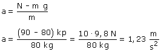

¿Sabes lo que mide una báscula en realidad? Cuando el ascensor tiene velocidad constante la lectura de la báscula es igual al peso del observador, luego este pesa: 80 kp
 Al detenerse el ascensor la aceleración va hacia arriba, esto indica que el ascensor bajaba |